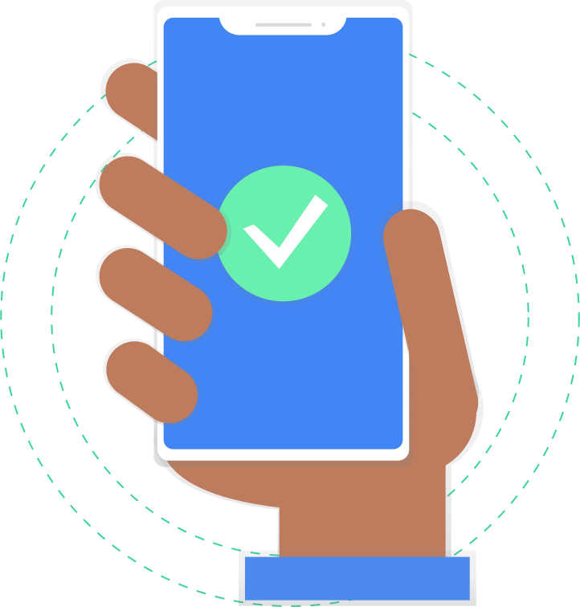

<div class="container-scroller">
  <!-- partial:partials/_navbar.html -->
  <app-salesman-header
    (sideBarDisplay)="displaySideBar($event)"
    [sideBarDisplayOverlay]="sideBarDisplay"
  ></app-salesman-header>
  <!-- partial -->
  <div class="container-fluid page-body-wrapper">
    <div (click)="hideSidebar()" *ngIf="sideBarDisplay" class="overlay_sidenav"></div>
    <app-salersman-sidebar
      *ngIf="sideBarDisplay"
      class="sidebar_mobile"
      [sideBarDisplay]="sideBarDisplay"
    ></app-salersman-sidebar>
    <div [ngClass]="!sideBarDisplay ? 'main-panel sidebar-active' : 'main-panel'" *ngIf="!isDesktop">
      <router-outlet></router-outlet>
    </div>
    <div class="main-panel" *ngIf="isDesktop" style="display: flex; flex-direction: column; padding-top: 55px">
      <p
        style="margin: auto;
                font-size: 25px;
                font-weight: 200;
      "
      >
        Available only for mobile view. <span style="color: #d4559f;">Kindly open in mobile.</span>
      </p>
      
    </div>
  </div>
</div>
